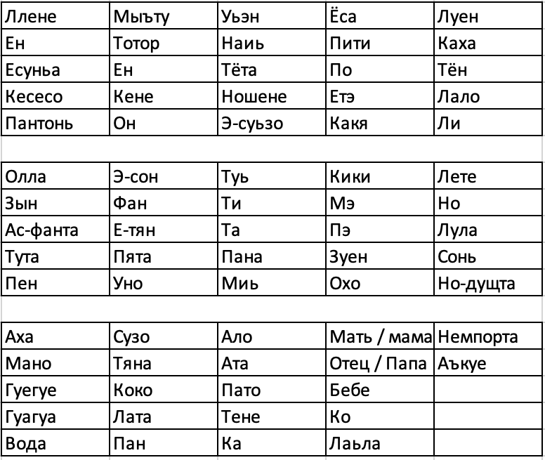
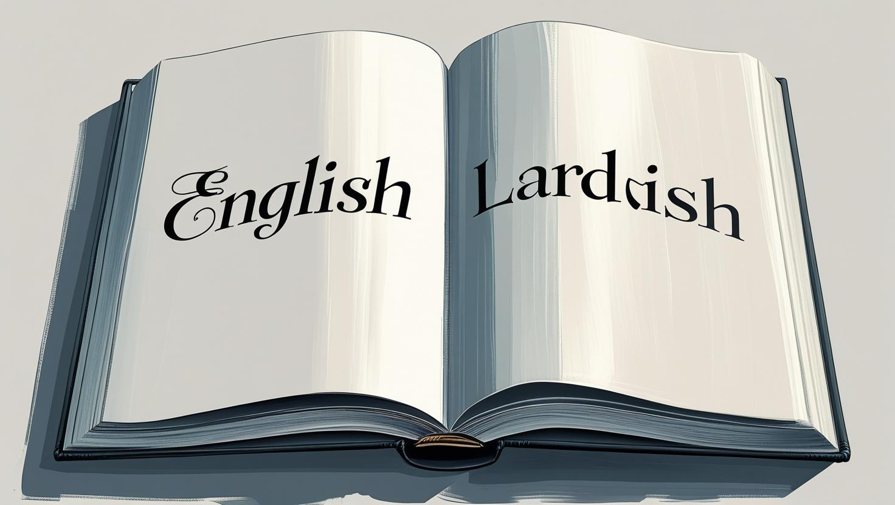

The Official Languages of the Lardish Republic
As formally stipulated within Article 38 of its Political Constitution, the United States of the First Lardish Republic (USFLR) recognized a rather unique linguistic duality: English and Lardish were both enshrined as official languages. Yet, the story behind Lardish, in particular, is one of ambition, innovation, and persistent struggle. Prior to the Republic's very establishment, its visionary creator, Tutita Col, harbored a grand aspiration: to forge an entirely new language for his people. This dream led to the founding of Lard Corporation, a pivotal entity whose broader impact we will explore in greater depth within the advanced course material. The formal development of the Lardish language officially commenced in 2019, though its genesis can be traced back to an initial prototype crafted in mid-2018. The early stages, however, were not without their internal challenges. Following a period of corporate upheaval, Lard Lapudding briefly assumed the helm as CEO after Tutita Col's temporary resignation. Despite this leadership shift, the King's shadow loomed large, as he remarkably retained significant, if indirect, influence over the ongoing linguistic project. By 2021, Tutita Col had re-assumed the role of CEO, a move that, perhaps ironically, led to a noticeable slowdown in the language's development, hinting at shifting priorities or internal friction.

Even before the Republic's formal establishment, a crucial referendum was conducted in April 2022, putting the very future of Lardish into the hands of its nascent citizenry. The question was clear: did the people deem it necessary to preserve Lardish as an official language? The verdict was resounding: the public overwhelmingly elected to retain it, a powerful testament to its perceived cultural importance. This developmental momentum, however, faced an unforeseen hurdle in 2022 with the official establishment of the Republic itself—a pivotal event that will be the central focus of our next historical chapter. By the time this burgeoning linguistic endeavor halted, the fruits of Lard Corporation's labor, encapsulated in the New Lardish Dictionary compiled in 2021, amounted to a mere 73 words. A stark reversal of fortunes then occurred with the Republic's formal inauguration: Lard Lapudding, assuming a more prominent executive role, declared English as the main official national language. Curiously, and perhaps controversially, a formal constitutional amendment to solidify this shift was never actually enacted, leaving the legal status of Lardish in a peculiar limbo.
The linguistic saga continued into 2023 when Lard Corporation introduced Lardish Guides, a program seemingly aimed at revitalizing interest. Yet, this initiative, too, met an untimely end following the dissolution of the Institute of the Lardish Language after a significant bill was passed by the Senate. At this juncture, a palpable sense of uncertainty pervaded the Lardish populace concerning the future of their fledgling language. Widespread speculation mounted that the President himself intended to present a direct bill to the Supreme Constitutional Court, seeking to definitively expunge Lardish from its official status. This proposed legislative action, however, immediately encountered fervent opposition from within the Senate. Crucially, it was subsequently denied by the Supreme Constitutional Court, notably without the concurrence of all its chambers. This decisive intervention was largely spearheaded by the Lardish opposition judges, who saw their duty as safeguarding 'national culture' against what they perceived as an existential threat to the language.
Despite this setback, the issue of Lardish's official standing was far from settled. In 2024, the contentious bill was proposed once more. This time, in a truly unprecedented display of political alignment, a consensus was remarkably reached within both the House of Deputies and the Senate. The renewed bill, a comprehensive legislative package addressing various facets of national identity, was widely anticipated to receive the President's approval, and subsequently, the Supreme Constitutional Court's final endorsement. Yet, fate intervened. Due to the sudden and impactful resignation of Lard Lapudding and the concurrent, momentous announcement of the entire country's dissolution, this crucial bill ultimately failed to pass into law. Consequently, in the annals of Lardish history, one clear conclusion emerges: Lardish, despite its turbulent journey and the many attempts to sideline it, always technically served as an official national language of the USFLR until the very moment the nation itself ceased to exist. Its story stands as a testament to the complex interplay of culture, power, and political will within a vanished republic.